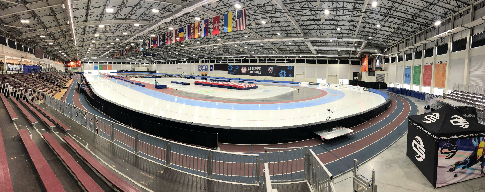

REGULAMENT
Patinatorii alearga in perechi, fiind cronometrati separat. Perechile sunt stabilite in functie de rezultatele obtinute de-a lungul sezonului sau de tragerea la sorti de dinaintea concursului.
Fiecarei perechi ii este permis un singur start furat. Va fi descalificat participantul care va fura a doua oara startul.
La fiecare tura patinatorul trebuie sa schimbe culoarul pe care participa intr-o zona special amenajata pentru acest lucru, astfel daca patinatorul vine pe cel interior trebuie sa treaca pe exterior, iar daca patinatorul vine de pe cel exterior intra pe cel interior. In probele de urmarire nu este necesara schimbarea culoarului, cursa se desfasoara pe culoarul interior. Daca patinatorii au ajuns in acelasi moment pe linia de schimbare a culoarului, cel de pe interior va trebui sa ii dea prioritate celui venit de pe exterior, in caz contrar, patinatorul de pe culoarul interior va fi descalificat.
Cu exceptia probelor de 500 m, care au 2 manse, celelalte probe se desfasoara intr-o singura mansa.
Sunt 12 probe olimpice la aceasta disciplina, astfel:
Masculin:
500 m: 1 tura si 1/4
1.000 m: 2 ture si 2/4
1.500 m: 3 ture si 3/4
5.000 m: 12 ture si 2/4
10.000 m: 25 ture
Pursuit: 8 ture
Feminin:
500 m: 1 tura si 1/4
1.000 m: 2 ture si 2/4
1.500 m: 3 ture si 3/4
3.000 m: 7 ture si 2/4
5.000 m: 12 ture si 2/4
Pursuit: 6 ture
RECORDURI MONDIALE
Masculin:
| PROBA | TIMP | DATA | LOCATIE | NUME | NATIONALITATE |
|---|---|---|---|---|---|
| 500 m | 33,61 | 09 MAR 2019 | SALT LAKE CITY(USA) | PAVEL KULIZHNIKOV | RUSIA |
| 1.000 m | 1.06,18 | 09 MAR 2019 | SALT LAKE CITY(USA) | KJELD NUIS | OLANDA |
| 1.500 m | 1.40,17 | 10 MAR 2019 | SALT LAKE CITY(USA) | KJELD NUIS | OLANDA |
| 5.000 m | 6.01,86 | 10 DEC 2017 | SALT LAKE CITY(USA) | TED-JAN BLOEMEN | CANADA |
| 10.000 m | 12.36,30 | 21 NOV 2015 | SALT LAKE CITY(USA) | TED-JAN BLOEMEN | CANADA |
Feminin:
| PROBA | TIMP | DATA | LOCATIE | NUME | NATIONALITATE |
|---|---|---|---|---|---|
| 500 m | 36,36 | 16 NOV 2013 | SALT LAKE CITY(USA) | SANG-HWA LEE | COREEA |
| 1.000 m | 1.11,61 | 09 MAR 2019 | SALT LAKE CITY(USA) | BRITTANY BOWE | USA |
| 1.500 m | 1.49,83 | 10 MAR 2019 | SALT LAKE CITY(USA) | MIHO TAKAGI | JAPONIA |
| 3.000 m | 3.52,02 | 09 MAR 2019 | SALT LAKE CITY(USA) | MARTINA SABLIKOVA | CEHIA |
| 5.000 m | 6.42,01 | 03 MAR 2019 | CALGARY(CANADA) | MARTINA SABLIKOVA | CEHIA |

UTAH OLYMPIC OVAL
Utah Olympic Oval este un patinoar de viteza situat la 23 de kilometri sud-vest de Salt Lake City, in Kearns, Utah. Patinoarul a fost construit pentru Jocurile Olimpice de iarna din 2002. In interiorul acestuia, este pista de gheata de 400 de metri, inconjurat de o pista de alergare de 442 de metri. Datorita inaltimii sale ridicate, rezistenta la aer scazut, 10 recorduri Olimpice si 9 recorduri mondiale au fost stabilite la Utah Olympic Oval in timpul Jocurilor Olimpice din 2002, cel mai mare record mondial stabilit vreodata la un eveniment. Prin urmare, Utah Olympic Oval este cel mai rapid patinoar din lume.